F01_tax_and_expenses · Actuals / unaudited / forecast
What does the fiscal plan assume?
PREFU 2026 tax and expense ratios
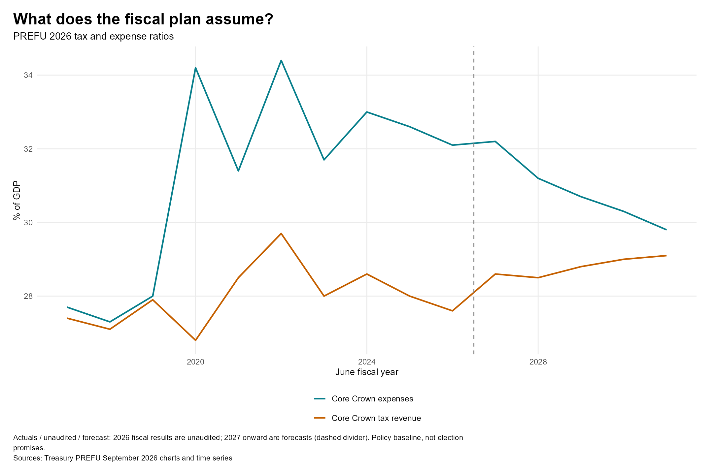
2026 fiscal results are unaudited; 2027 onward are forecasts (dashed divider). Policy baseline, not election promises.
PNG · SVG · Plotted data · Source 1
F02_balance_and_cash · Actuals / unaudited / forecast
A surplus and cash to repay debt are different
Operating balances and residual cash
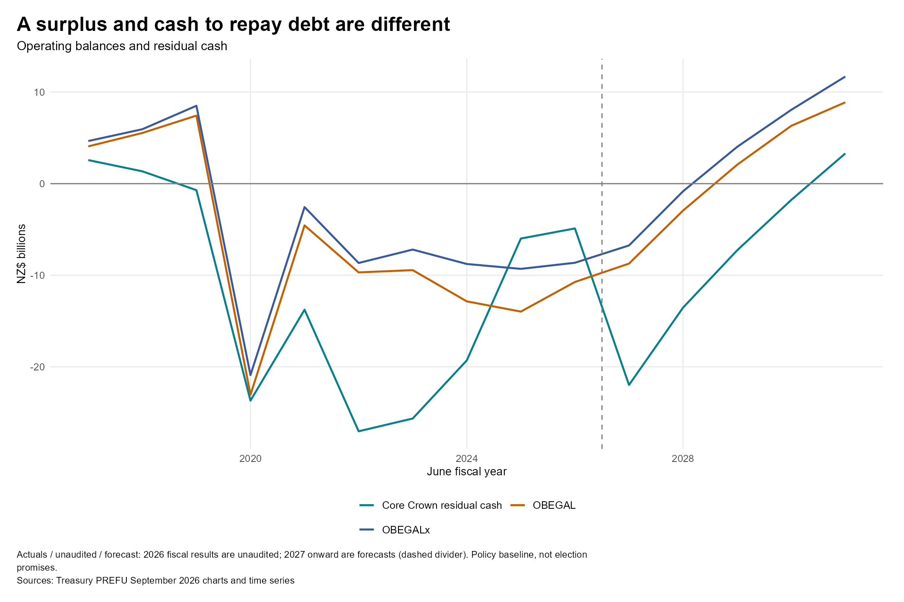
2026 fiscal results are unaudited; 2027 onward are forecasts (dashed divider). Policy baseline, not election promises.
PNG · SVG · Plotted data · Source 1
F03_forecast_revisions · Forecast-vintage comparison
The baseline changed between Budget and the election
Same measure and year, two Treasury vintages
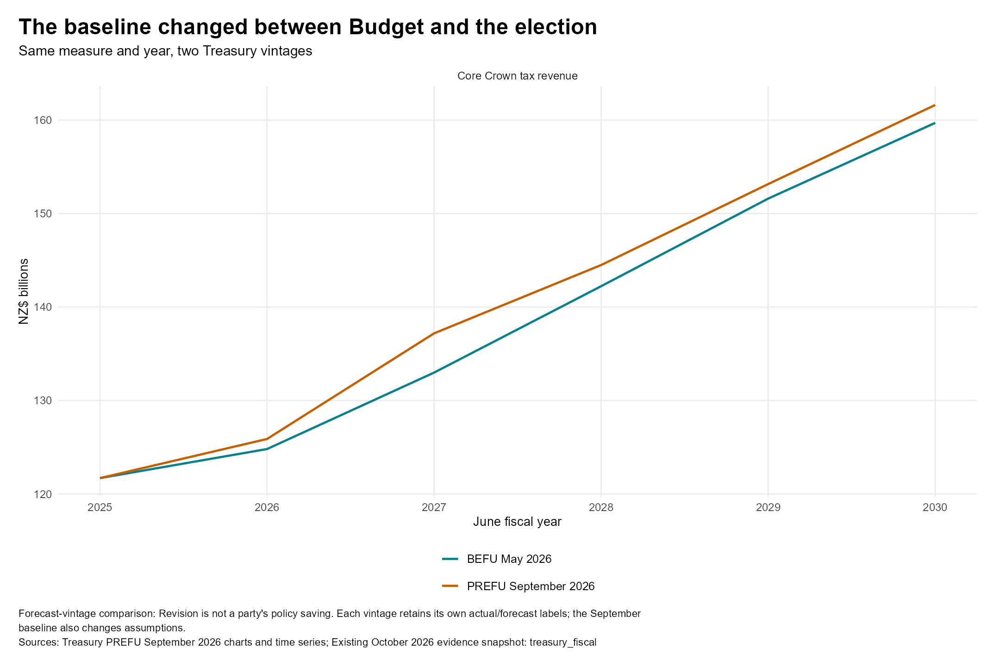
Revision is not a party's policy saving. Each vintage retains its own actual/forecast labels; the September baseline also changes assumptions.
PNG · SVG · Plotted data · Source 1 · Source 2
F04_core_balance_arithmetic · Derived from forecast
Revenue growth and expense growth both matter
2025/26 to 2030/31 change in the core Crown revenue-minus-expenses balance
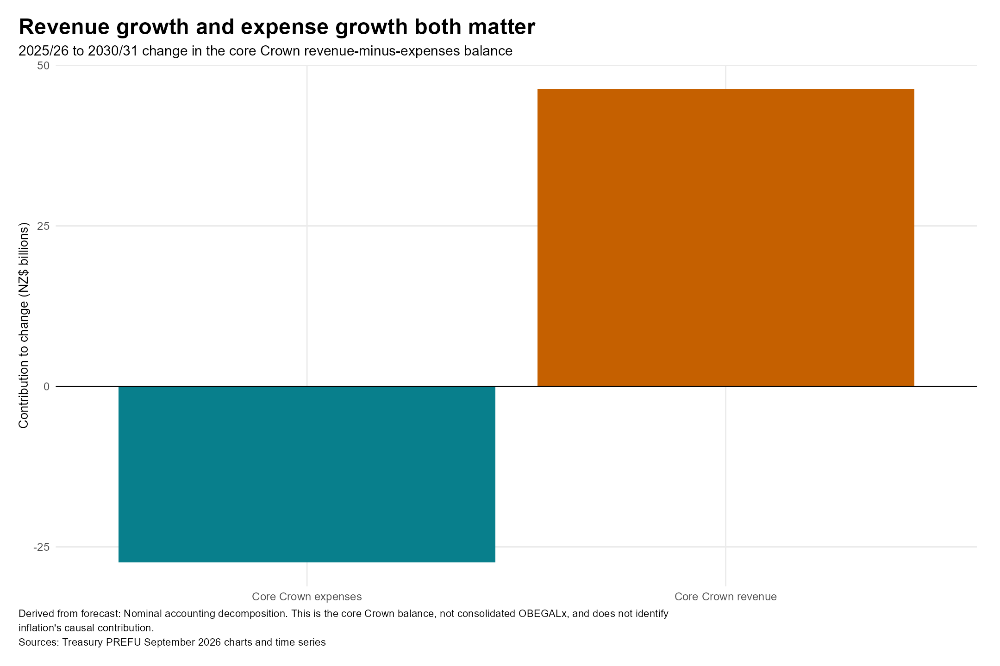
Nominal accounting decomposition. This is the core Crown balance, not consolidated OBEGALx, and does not identify inflation's causal contribution.
PNG · SVG · Plotted data · Source 1
F05_spending_growth_components · Derived from forecast
Where does forecast spending growth sit?
Functional expense changes, 2025/26 to 2030/31
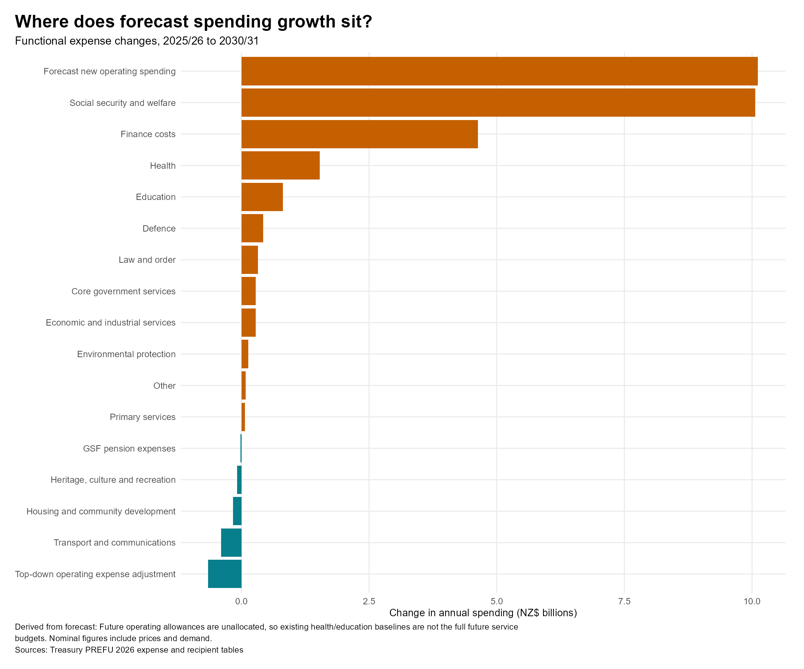
Future operating allowances are unallocated, so existing health/education baselines are not the full future service budgets. Nominal figures include prices and demand.
PNG · SVG · Plotted data · Source 1
F06_debt_definitions · Actuals / unaudited / forecast
Which debt measure is being promised?
Three published Treasury definitions on the same chart
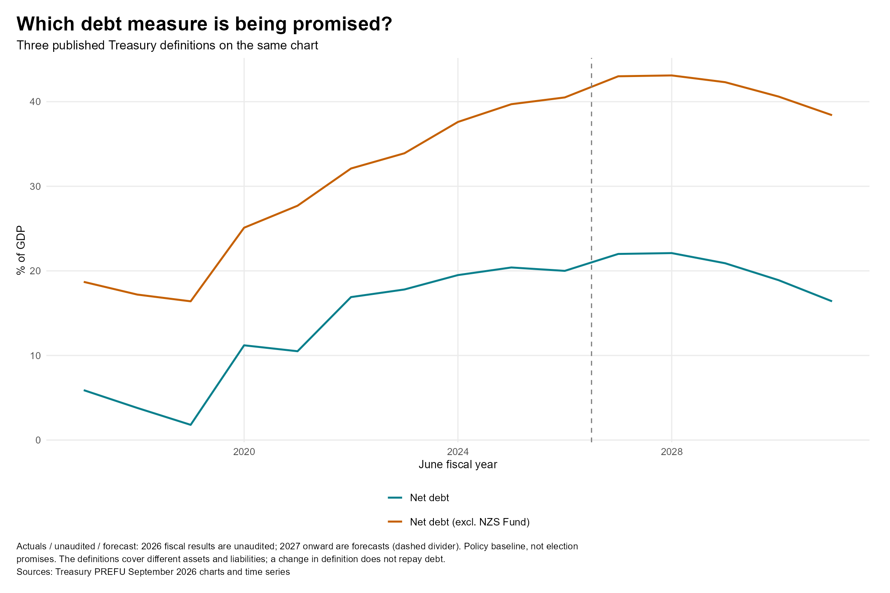
2026 fiscal results are unaudited; 2027 onward are forecasts (dashed divider). Policy baseline, not election promises. The definitions cover different assets and liabilities; a change in definition does not repay debt.
PNG · SVG · Plotted data · Source 1
N01_constant_real_earnings · Scenario
Tax can rise without a rise in real earnings
2% annual inflation; fixed thresholds versus fully indexed thresholds; current rates in both arms
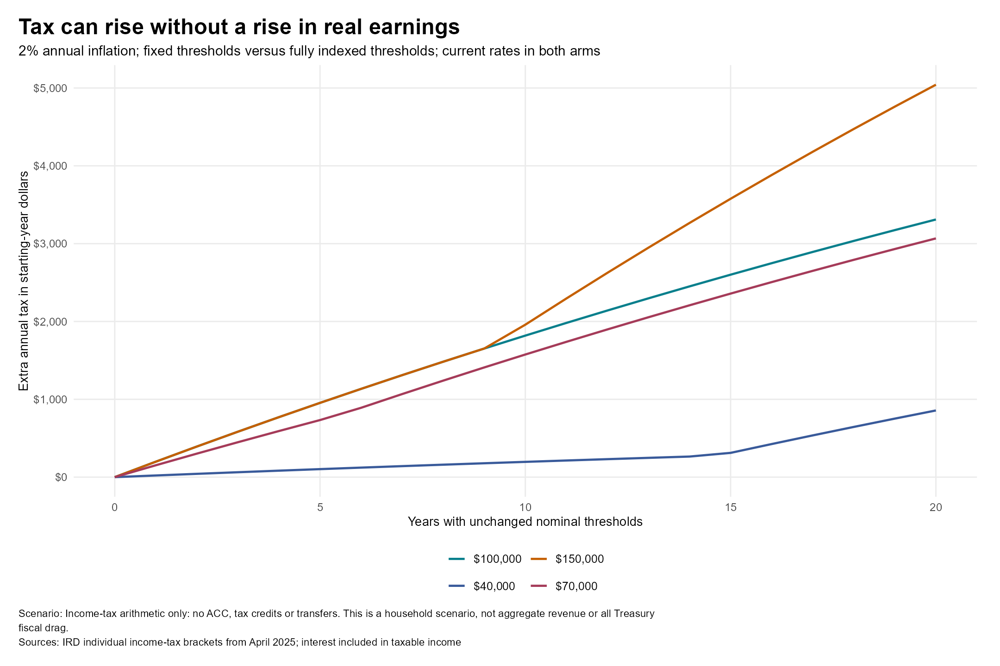
Income-tax arithmetic only: no ACC, tax credits or transfers. This is a household scenario, not aggregate revenue or all Treasury fiscal drag.
PNG · SVG · Plotted data · Source 1
N02_indexation_sensitivity · Scenario
The cost of frozen thresholds depends on inflation
Constant real earnings; the same progressive tax schedule throughout
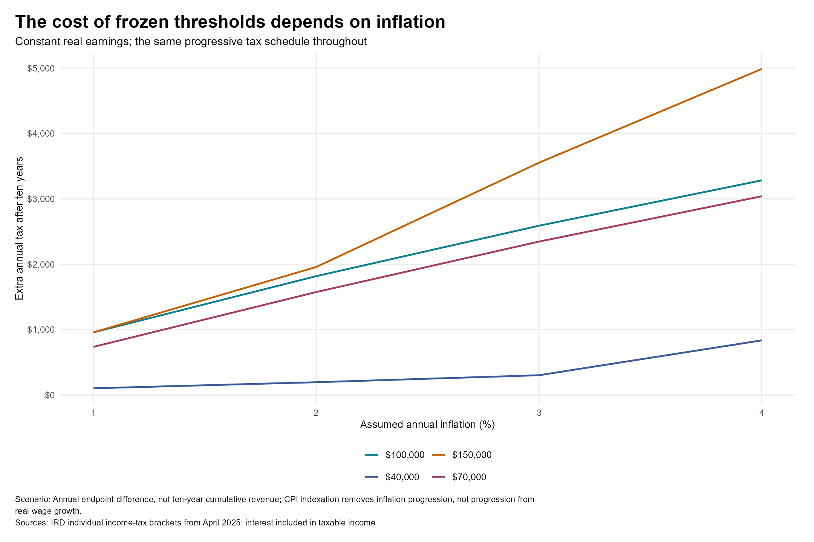
Annual endpoint difference, not ten-year cumulative revenue; CPI indexation removes inflation progression, not progression from real wage growth.
PNG · SVG · Plotted data · Source 1
N03_interest_real_returns · Scenario
An interest payment is not all purchasing-power income
Assumed 5% nominal interest and 33% income-tax rate
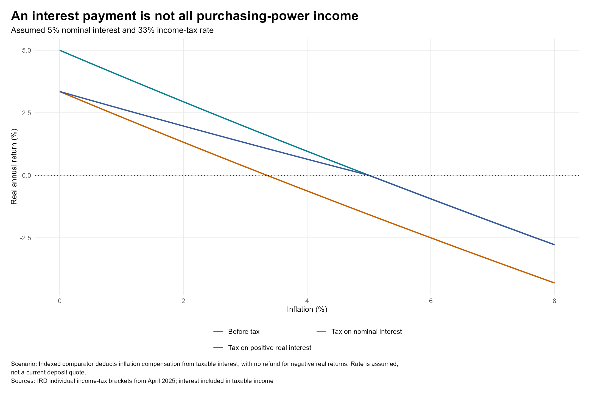
Indexed comparator deducts inflation compensation from taxable interest, with no refund for negative real returns. Rate is assumed, not a current deposit quote.
PNG · SVG · Plotted data · Source 1
N04_interest_tax_rate_sensitivity · Scenario
Nominal-interest taxation affects taxpayers differently
5% assumed nominal interest across illustrative tax rates
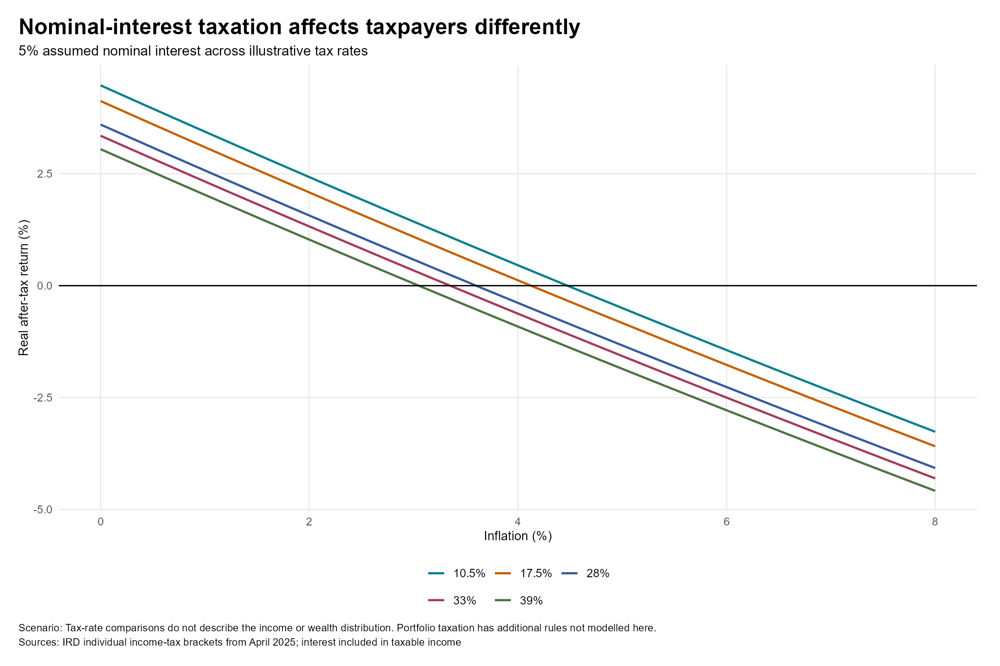
Tax-rate comparisons do not describe the income or wealth distribution. Portfolio taxation has additional rules not modelled here.
PNG · SVG · Plotted data · Source 1
N05_saving_compounding · Scenario
Small differences in annual tax compound
$100,000 initial saving; 5% nominal interest; 33% tax; no deposits or withdrawals
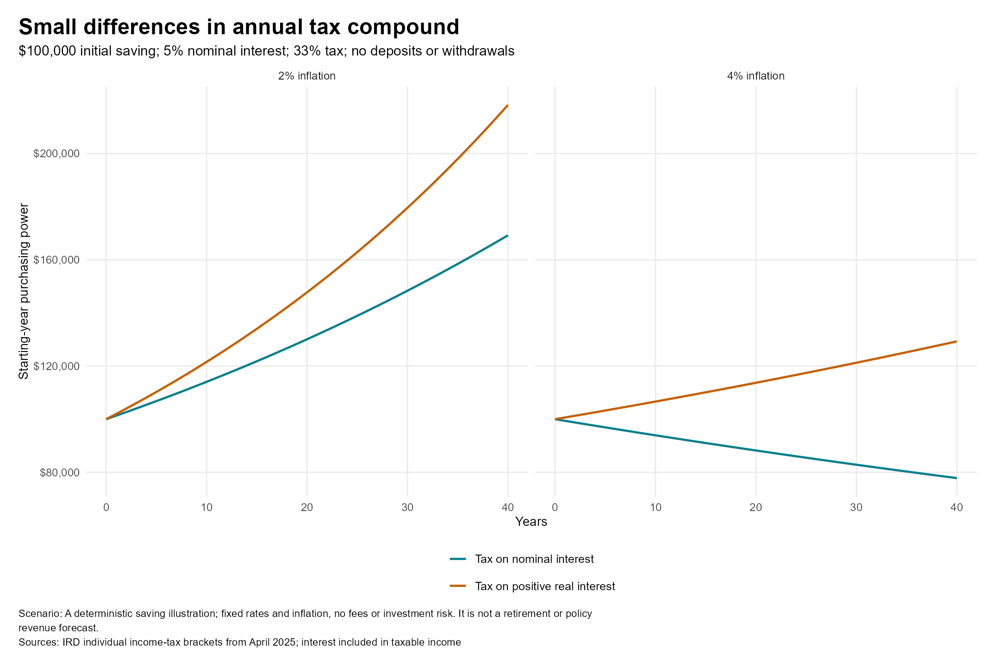
A deterministic saving illustration; fixed rates and inflation, no fees or investment risk. It is not a retirement or policy revenue forecast.
PNG · SVG · Plotted data · Source 1
N06_cgt_inflation_component · Proposed-policy scenario
How much capital-gains tax comes from inflation?
$500,000 eligible property; 28% proposed rate; zero real capital growth
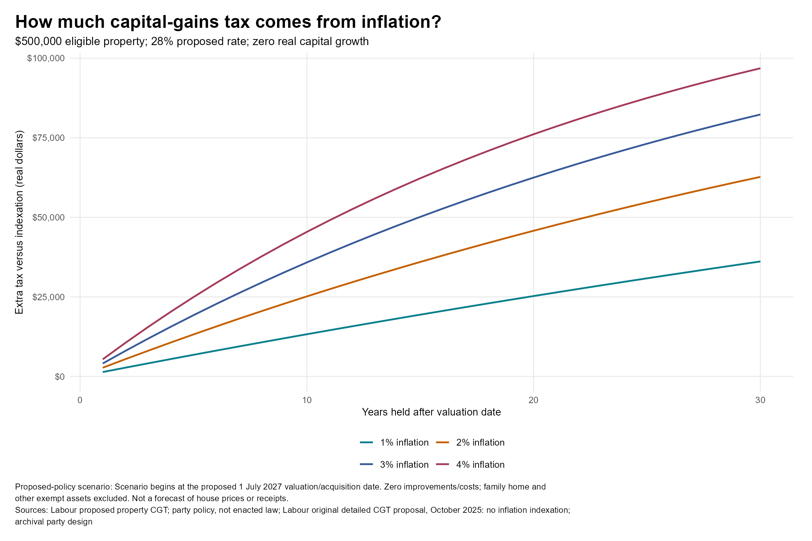
Scenario begins at the proposed 1 July 2027 valuation/acquisition date. Zero improvements/costs; family home and other exempt assets excluded. Not a forecast of house prices or receipts.
PNG · SVG · Plotted data · Source 1 · Source 2
N07_cgt_effective_real_rate · Proposed-policy scenario
A nominal tax rate and a tax on real gains differ
28% of nominal gains; 2% inflation; positive real gains only
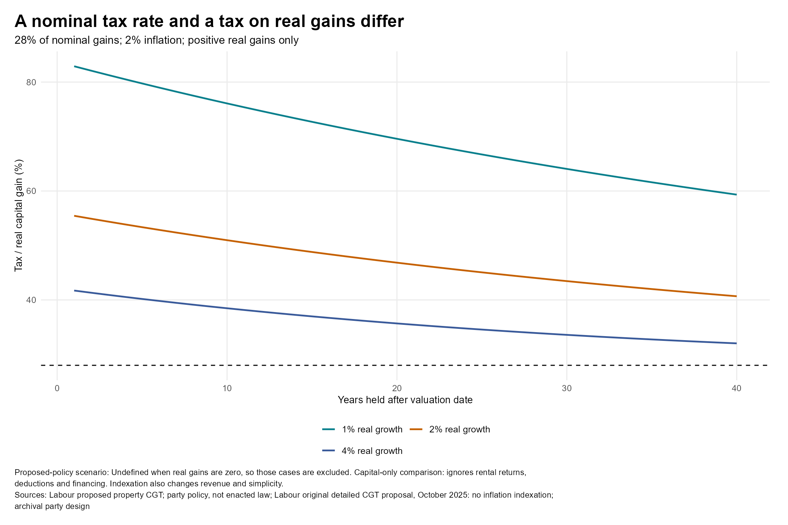
Undefined when real gains are zero, so those cases are excluded. Capital-only comparison: ignores rental returns, deductions and financing. Indexation also changes revenue and simplicity.
PNG · SVG · Plotted data · Source 1 · Source 2
N08_purchasing_power · Observed / derived
Why nominal amounts need a price benchmark
Observed national CPI; June 2010 purchasing power = 100
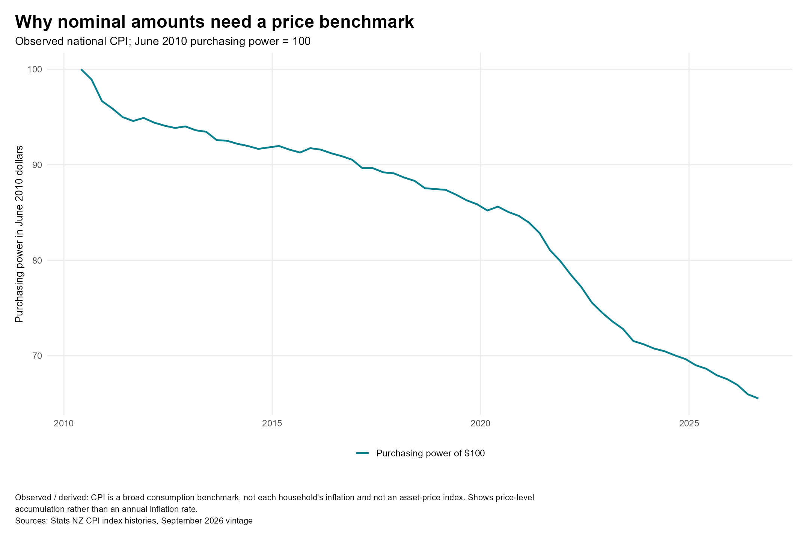
CPI is a broad consumption benchmark, not each household's inflation and not an asset-price index. Shows price-level accumulation rather than an annual inflation rate.
PNG · SVG · Plotted data · Source 1
W01_benefits_fiscal_scale · Actuals / unaudited / forecast
Separate the programmes before discussing welfare savings
Major benefit expenses, PREFU 2026
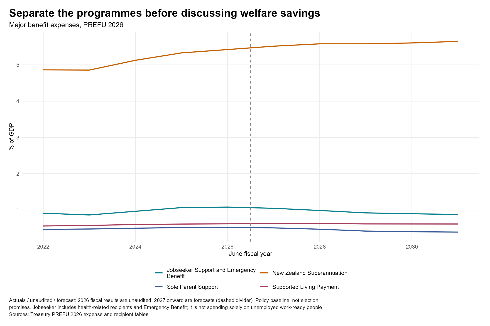
2026 fiscal results are unaudited; 2027 onward are forecasts (dashed divider). Policy baseline, not election promises. Jobseeker includes health-related recipients and Emergency Benefit; it is not spending solely on unemployed work-ready people.
PNG · SVG · Plotted data · Source 1
W02_benefit_growth · Derived from forecast
Which benefits drive forecast spending growth?
Ten largest absolute changes between 2025/26 and 2030/31
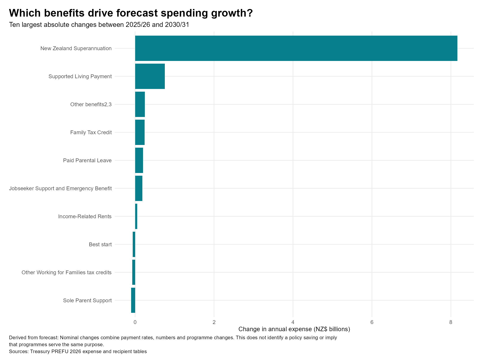
Nominal changes combine payment rates, numbers and programme changes. This does not identify a policy saving or imply that programmes serve the same purpose.
PNG · SVG · Plotted data · Source 1
W03_jobseeker_health_workready · Observed / derived
Two different groups within Jobseeker Support
Quarter-end counts from 2008; official backcasts before July 2013
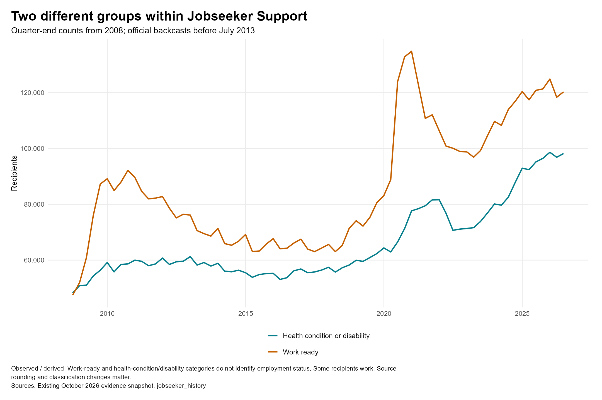
Work-ready and health-condition/disability categories do not identify employment status. Some recipients work. Source rounding and classification changes matter.
PNG · SVG · Plotted data · Source 1
W04_labour_demand_context · Observed / derived
Benefit receipt needs labour-market context
HLFS seasonally adjusted rates, 2000 to June 2026
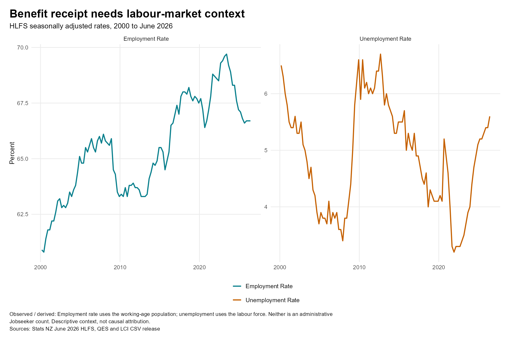
Employment rate uses the working-age population; unemployment uses the labour force. Neither is an administrative Jobseeker count. Descriptive context, not causal attribution.
PNG · SVG · Plotted data · Source 1
W05_savings_offsets · Scenario
Gross benefit reductions are not net fiscal savings
2025/26 unaudited expense base; offsets are assumptions
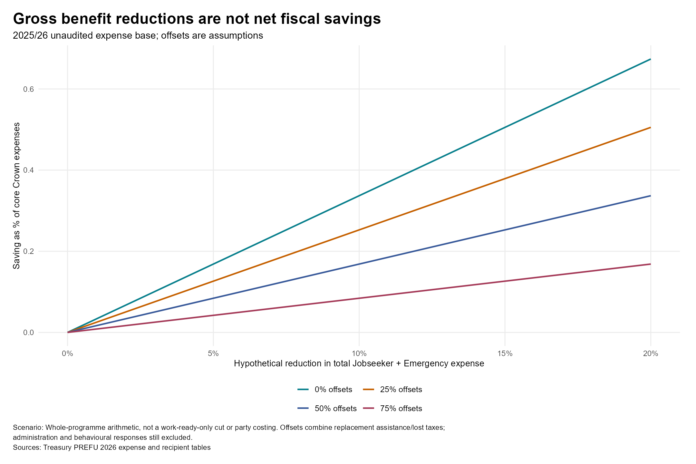
Whole-programme arithmetic, not a work-ready-only cut or party costing. Offsets combine replacement assistance/lost taxes; administration and behavioural responses still excluded.
PNG · SVG · Plotted data · Source 1
W06_long_spending_context · Observed / derived
Put the current debate in a longer spending history
Treasury actual expenses, 2001-2025; separately dated historical pack
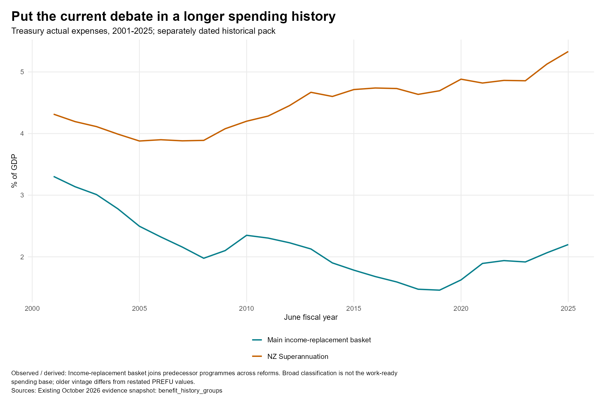
Income-replacement basket joins predecessor programmes across reforms. Broad classification is not the work-ready spending base; older vintage differs from restated PREFU values.
PNG · SVG · Plotted data · Source 1
H01_access_barriers_history · Observed / derived
Cost and appointment availability are separate barriers
NZ Health Survey; compare shared years rather than imputing missing observations
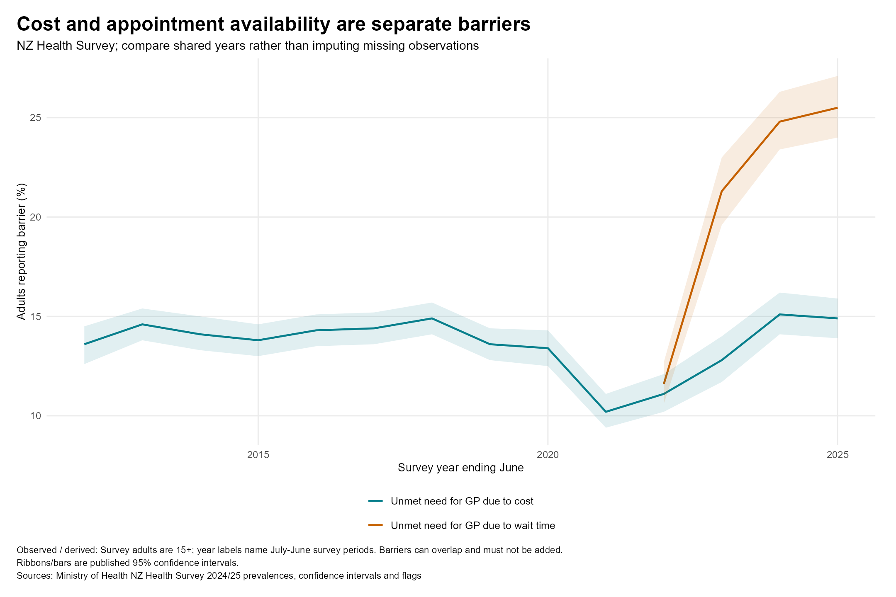
Survey adults are 15+; year labels name July-June survey periods. Barriers can overlap and must not be added. Ribbons/bars are published 95% confidence intervals.
PNG · SVG · Plotted data · Source 1
H02_access_by_age · Observed / derived
Who faces each access barrier?
Adults by age, 2024/25
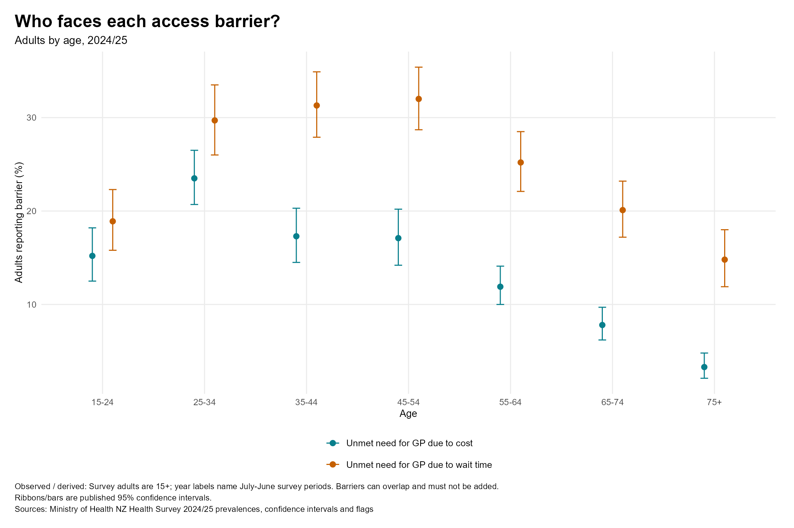
Survey adults are 15+; year labels name July-June survey periods. Barriers can overlap and must not be added. Ribbons/bars are published 95% confidence intervals.
PNG · SVG · Plotted data · Source 1
H03_access_by_deprivation · Observed / derived
Does the access problem follow deprivation?
NZDep neighbourhood groups, 2024/25
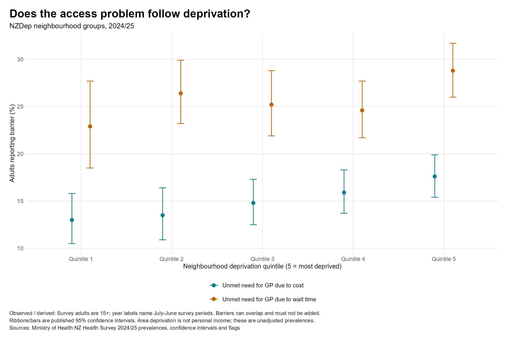
Survey adults are 15+; year labels name July-June survey periods. Barriers can overlap and must not be added. Ribbons/bars are published 95% confidence intervals. Area deprivation is not personal income; these are unadjusted prevalences.
PNG · SVG · Plotted data · Source 1
H04_access_by_disability · Observed / derived
Access matters most when need is greater
Disabled and non-disabled adults, 2024/25
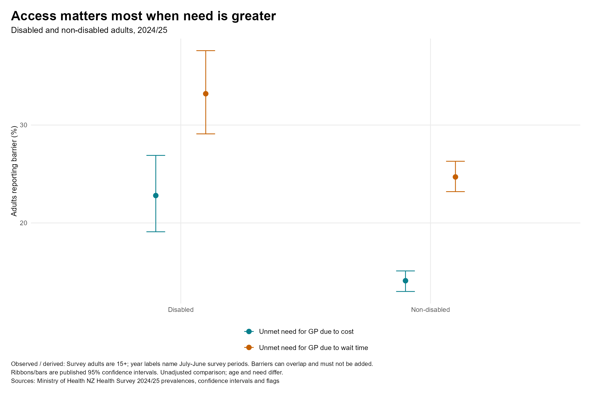
Survey adults are 15+; year labels name July-June survey periods. Barriers can overlap and must not be added. Ribbons/bars are published 95% confidence intervals. Unadjusted comparison; age and need differ.
PNG · SVG · Plotted data · Source 1
H05_access_by_ethnicity · Observed / derived
Access barriers differ across population groups
Adults, 2024/25; total-response ethnicity
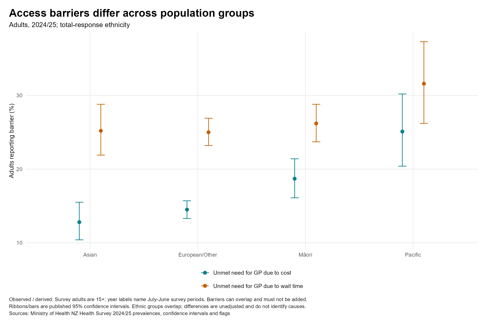
Survey adults are 15+; year labels name July-June survey periods. Barriers can overlap and must not be added. Ribbons/bars are published 95% confidence intervals. Ethnic groups overlap; differences are unadjusted and do not identify causes.
PNG · SVG · Plotted data · Source 1
H06_use_and_free_visits · Observed / derived
New subsidies also cover some existing care
GP use and reported free last visits by age, 2024/25
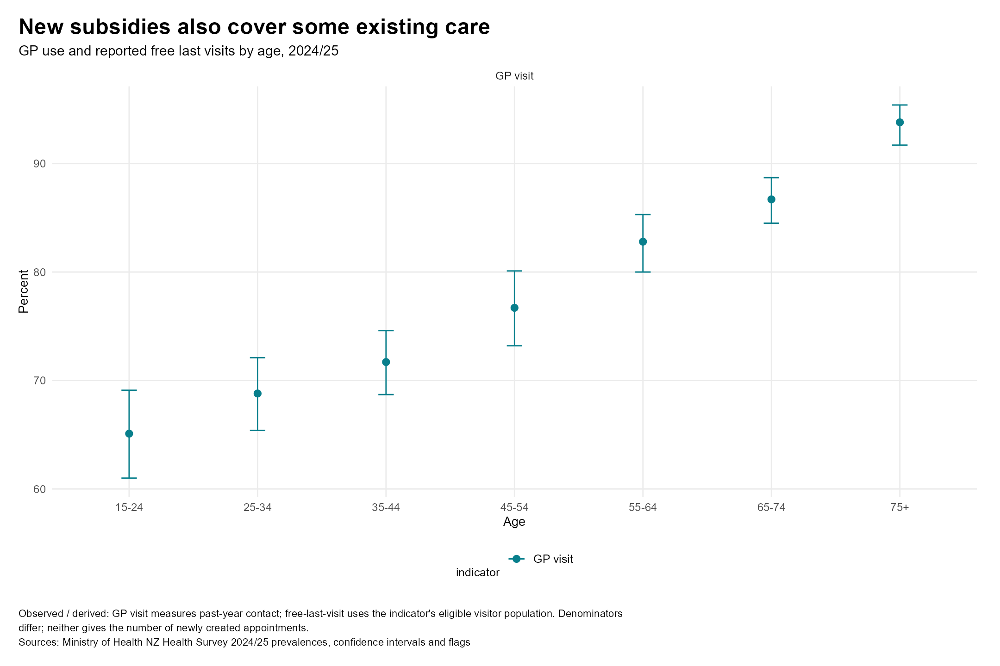
GP visit measures past-year contact; free-last-visit uses the indicator's eligible visitor population. Denominators differ; neither gives the number of newly created appointments.
PNG · SVG · Plotted data · Source 1
H07_health_budget_baseline · Actuals / unaudited / forecast
Read future health funding alongside unallocated allowances
PREFU existing functional baselines
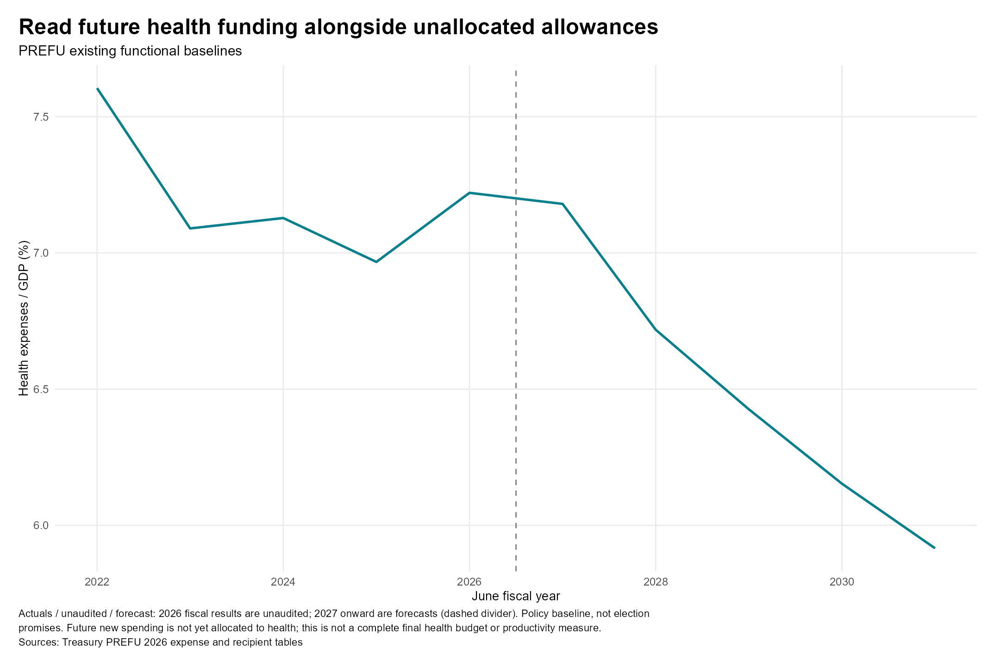
2026 fiscal results are unaudited; 2027 onward are forecasts (dashed divider). Policy baseline, not election promises. Future new spending is not yet allocated to health; this is not a complete final health budget or productivity measure.
PNG · SVG · Plotted data · Source 1
H08_additional_visit_unit_cost · Scenario
Value depends on additional care, not subsidised visits alone
Sensitivity grid: extra spending divided by genuinely additional completed appointments
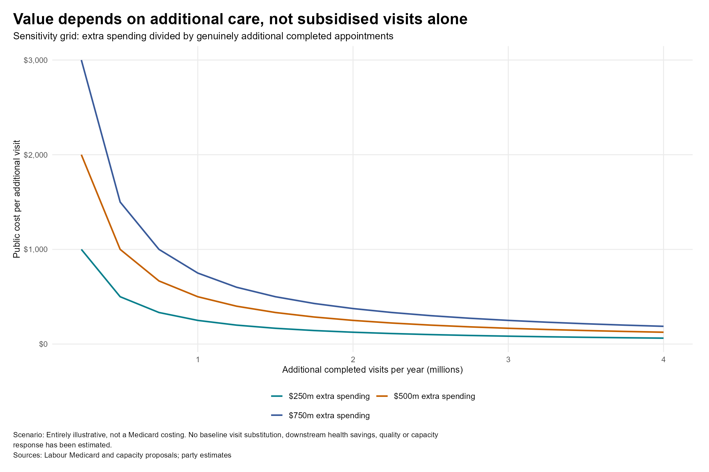
Entirely illustrative, not a Medicard costing. No baseline visit substitution, downstream health savings, quality or capacity response has been estimated.
PNG · SVG · Plotted data · Source 1
L01_household_inflation · Observed / derived
There is no single household inflation experience
Household living-cost indexes through September 2026
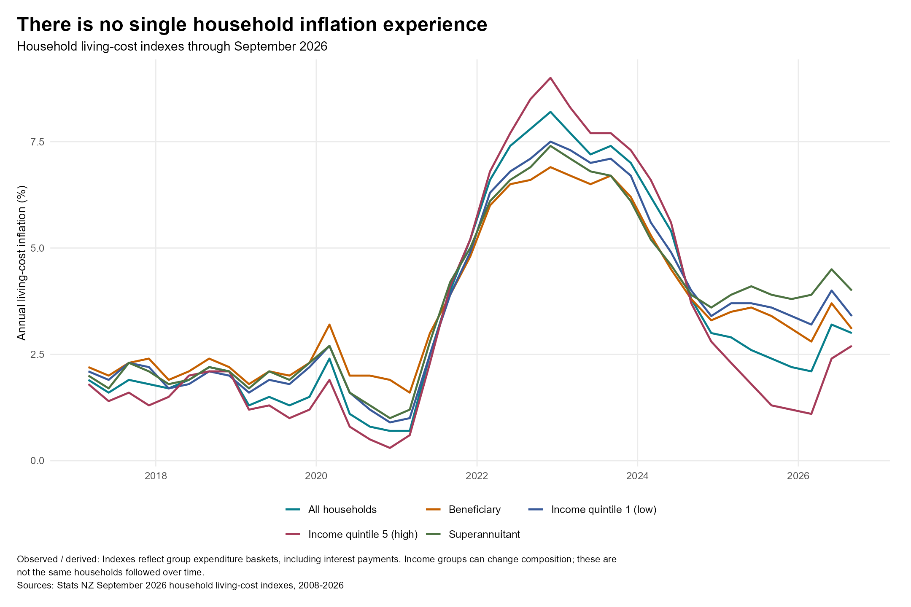
Indexes reflect group expenditure baskets, including interest payments. Income groups can change composition; these are not the same households followed over time.
PNG · SVG · Plotted data · Source 1
L02_cumulative_household_costs · Observed / derived
Lower inflation does not restore the earlier price level
Cumulative cost of maintaining each group's spending basket
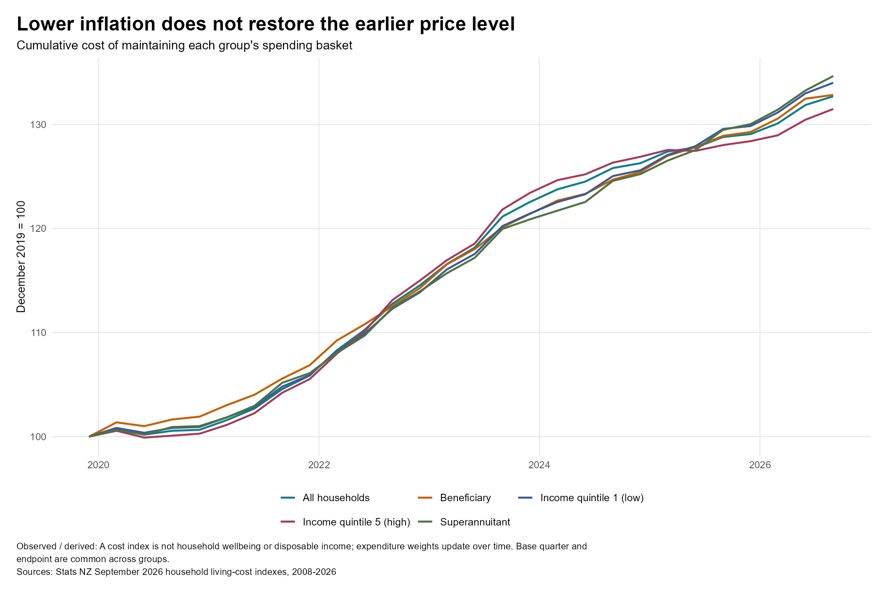
A cost index is not household wellbeing or disposable income; expenditure weights update over time. Base quarter and endpoint are common across groups.
PNG · SVG · Plotted data · Source 1
L03_cost_components · Observed / derived
Which costs changed the household budget?
Selected group-level price indexes for all households
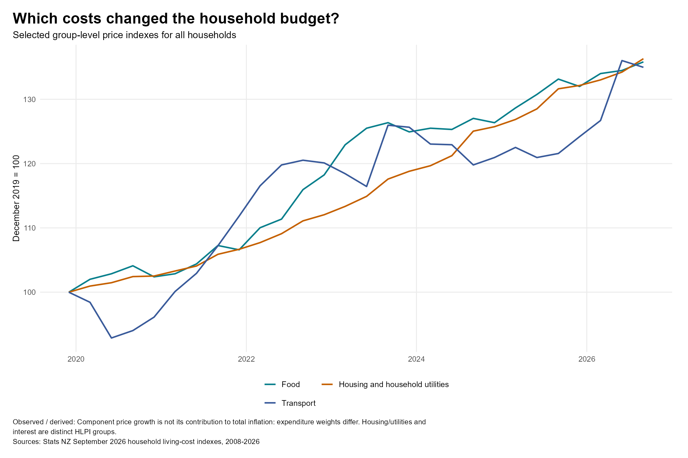
Component price growth is not its contribution to total inflation: expenditure weights differ. Housing/utilities and interest are distinct HLPI groups.
PNG · SVG · Plotted data · Source 1
L04_wages_and_prices · Observed / derived
Are wage gains restoring purchasing power?
Observed wages through June 2026; average earnings versus fixed-quality wage rates
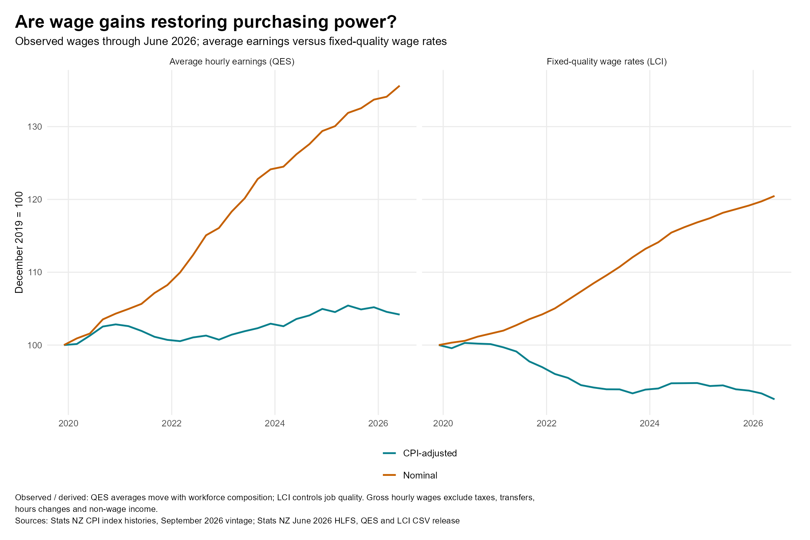
QES averages move with workforce composition; LCI controls job quality. Gross hourly wages exclude taxes, transfers, hours changes and non-wage income.
PNG · SVG · Plotted data · Source 1 · Source 2
L05_wage_basket_sensitivity · Context proxy
The same wage series buys different household baskets
National average gross hourly earnings deflated by each group's living costs
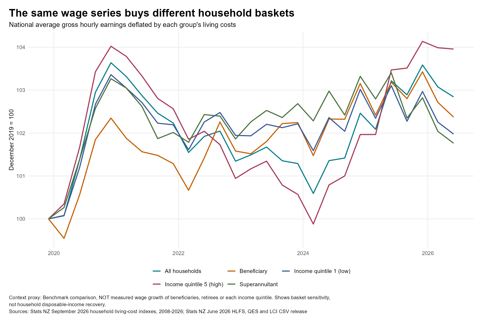
Benchmark comparison, NOT measured wage growth of beneficiaries, retirees or each income quintile. Shows basket sensitivity, not household disposable-income recovery.
PNG · SVG · Plotted data · Source 1 · Source 2
L06_jobs_and_hours · Observed / derived
Hourly wages are only part of earned income
Seasonally adjusted employment and paid-hours context through June 2026
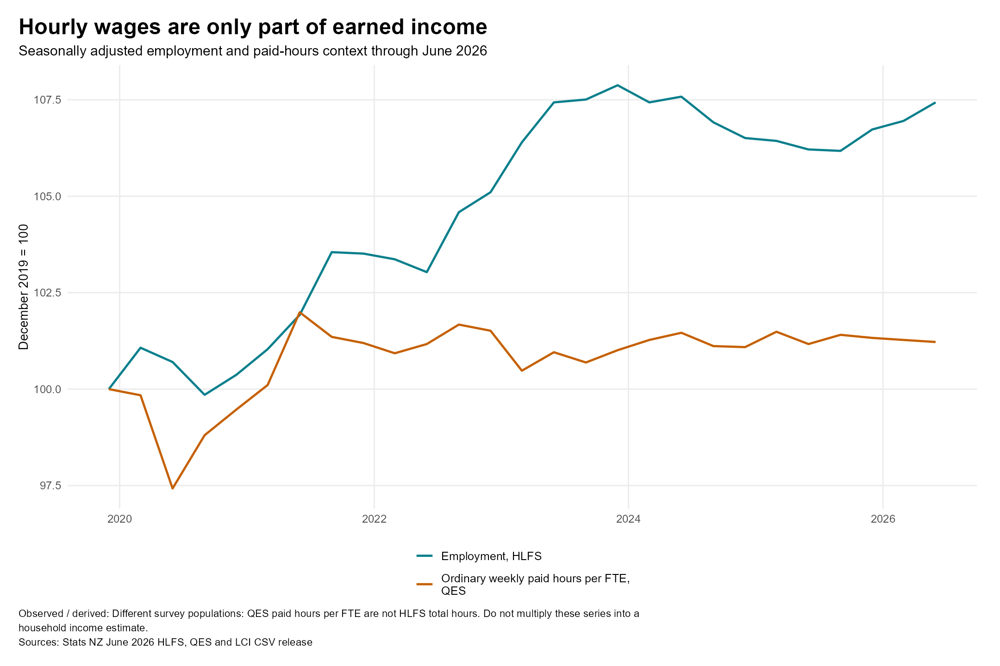
Different survey populations: QES paid hours per FTE are not HLFS total hours. Do not multiply these series into a household income estimate.
PNG · SVG · Plotted data · Source 1
L07_household_tenure · Observed / derived
Housing tenure helps explain different cost pressures
Latest household-profile benchmark year: 2024
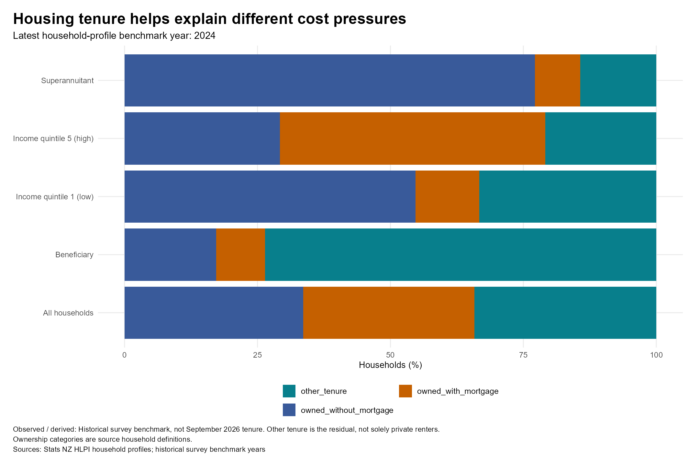
Historical survey benchmark, not September 2026 tenure. Other tenure is the residual, not solely private renters. Ownership categories are source household definitions.
PNG · SVG · Plotted data · Source 1
C01_first_year_tax · Scenario
Tax-rate cuts and investment deductions target different firms
Illustrative new $100,000 eligible asset; 20% diminishing-value depreciation
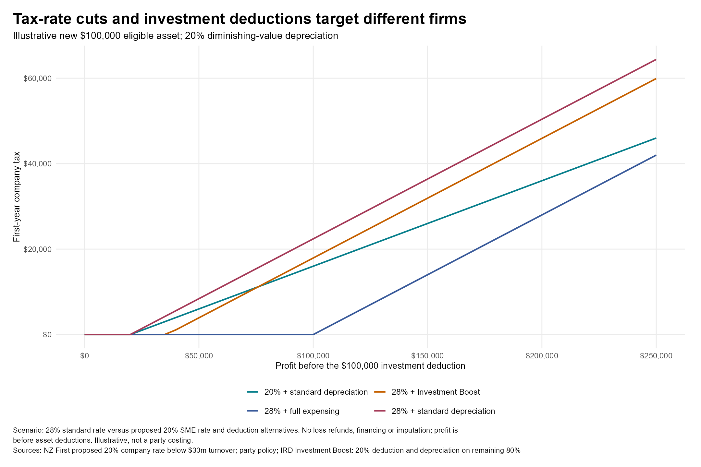
28% standard rate versus proposed 20% SME rate and deduction alternatives. No loss refunds, financing or imputation; profit is before asset deductions. Illustrative, not a party costing.
PNG · SVG · Plotted data · Source 1 · Source 2
C02_unused_deductions · Scenario
A deduction need not deliver cash to a loss-making firm
Same illustrative investment; tax losses are not refunded in this model
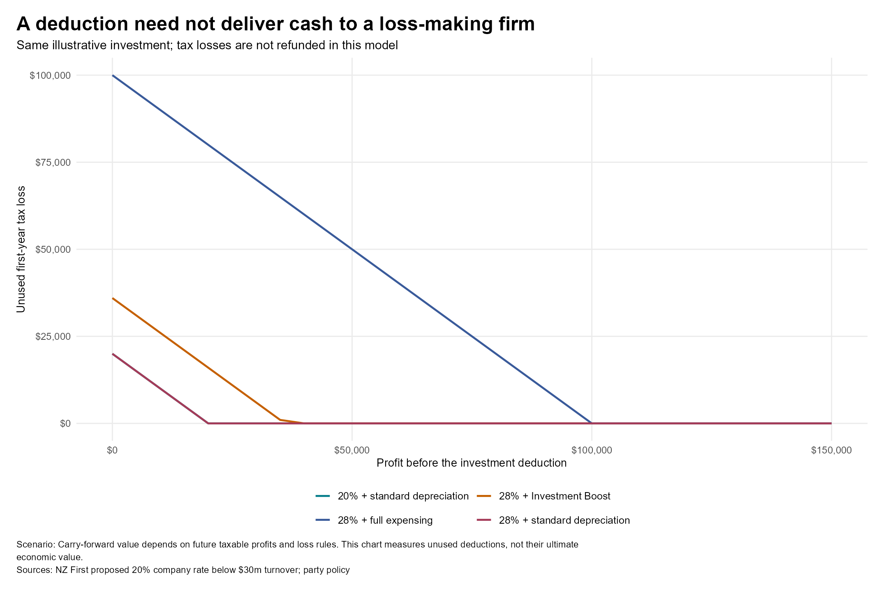
Carry-forward value depends on future taxable profits and loss rules. This chart measures unused deductions, not their ultimate economic value.
PNG · SVG · Plotted data · Source 1
C03_deduction_timing · Scenario
Expensing primarily changes the timing of deductions
$100,000 asset; full lifetime deductions reconcile to its cost
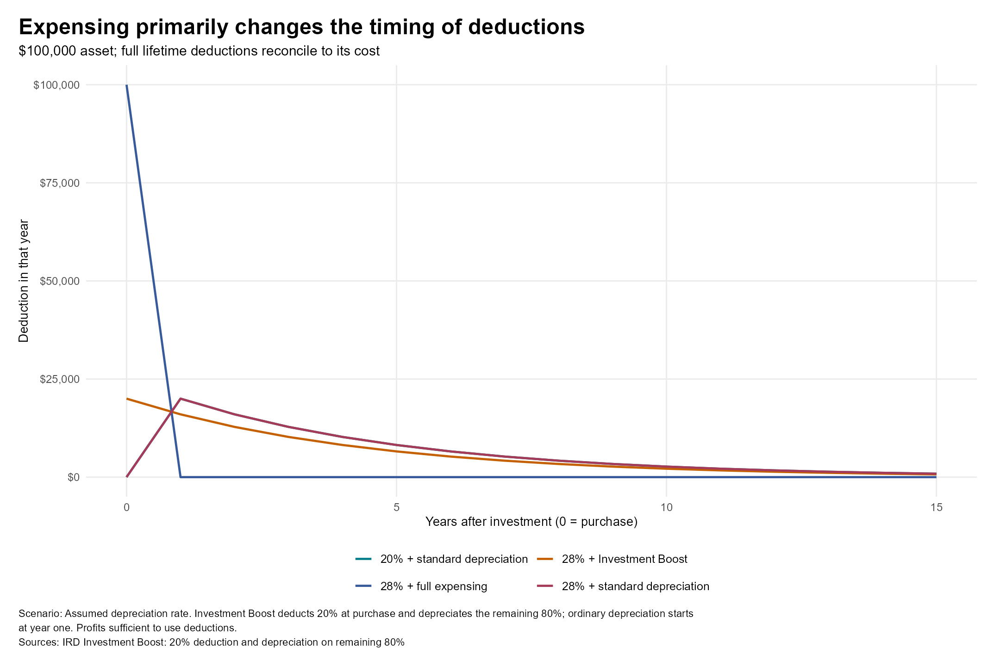
Assumed depreciation rate. Investment Boost deducts 20% at purchase and depreciates the remaining 80%; ordinary depreciation starts at year one. Profits sufficient to use deductions.
PNG · SVG · Plotted data · Source 1
C04_present_value_tax_relief · Scenario
Compare tax relief in present-value terms
Same asset and cash-flow timing, different rates and deductions
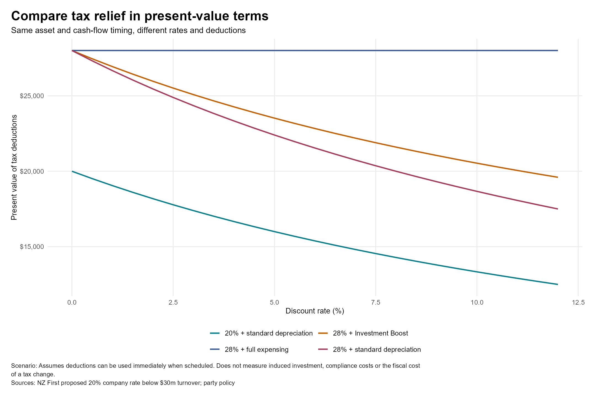
Assumes deductions can be used immediately when scheduled. Does not measure induced investment, compliance costs or the fiscal cost of a tax change.
PNG · SVG · Plotted data · Source 1
C05_marginal_investment · Model scenario
Which change lowers the hurdle for a new investment?
Perpetual unlevered cash-flow model with an immediately usable deduction
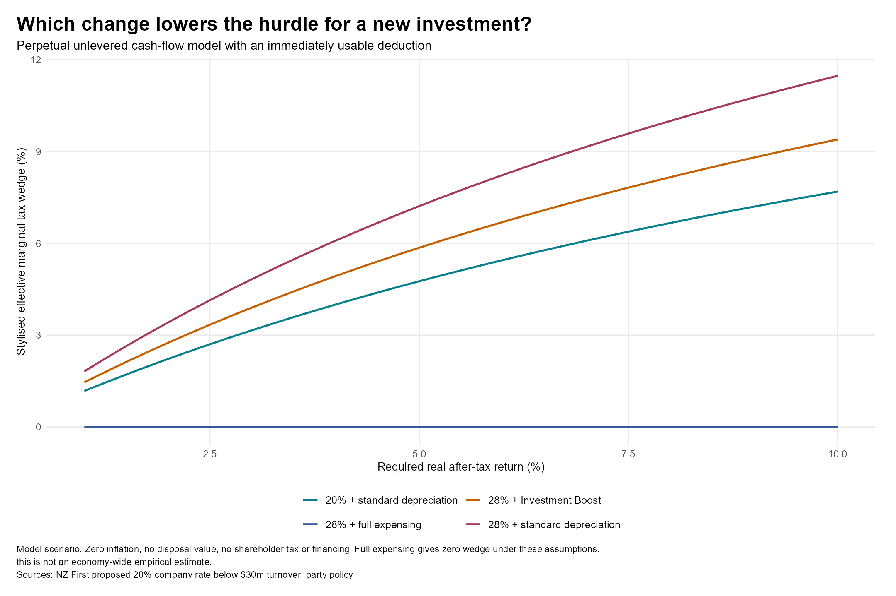
Zero inflation, no disposal value, no shareholder tax or financing. Full expensing gives zero wedge under these assumptions; this is not an economy-wide empirical estimate.
PNG · SVG · Plotted data · Source 1
C06_rd_context · Context proxy
Investment policy needs an outcome benchmark
R&D intensity: New Zealand, Australia and the OECD aggregate
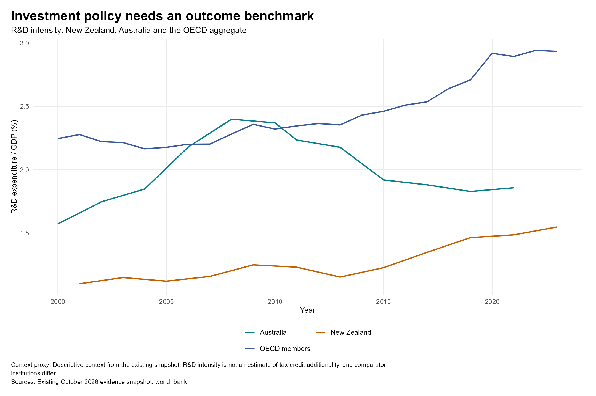
Descriptive context from the existing snapshot. R&D intensity is not an estimate of tax-credit additionality, and comparator institutions differ.
PNG · SVG · Plotted data · Source 1
C07_rd_by_sector · Observed / derived
Who performs research and development?
Stats NZ published sector observations; available survey years only
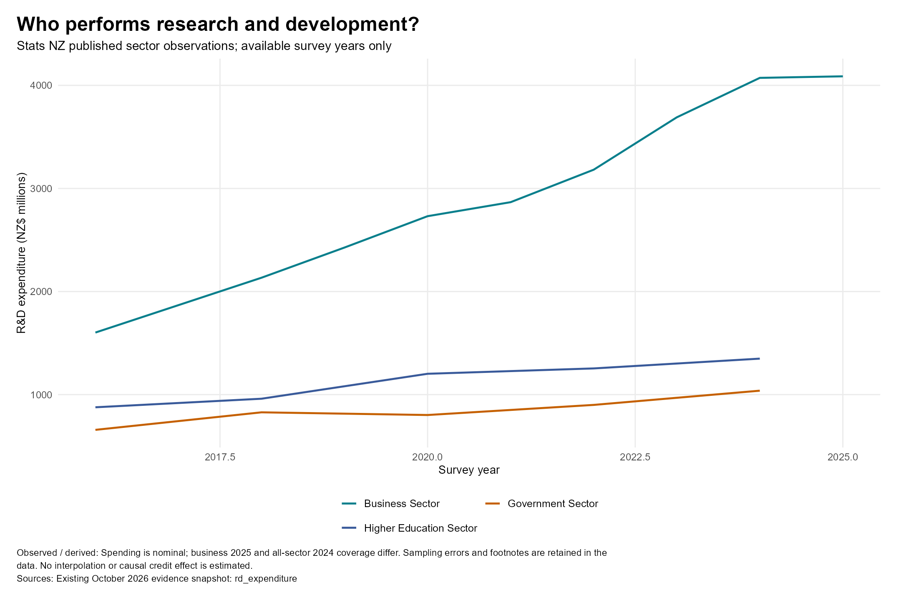
Spending is nominal; business 2025 and all-sector 2024 coverage differ. Sampling errors and footnotes are retained in the data. No interpolation or causal credit effect is estimated.
PNG · SVG · Plotted data · Source 1
C08_rd_incentive_expense · Actuals / estimates / forecast
Track the fiscal input separately from the R&D outcome
2026 tax expenditure statement; published actual/estimate/forecast labels
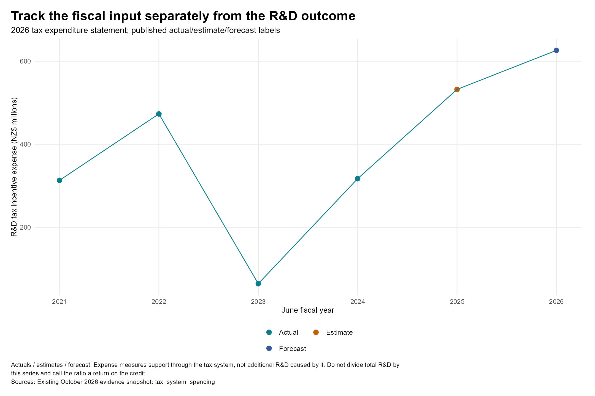
Expense measures support through the tax system, not additional R&D caused by it. Do not divide total R&D by this series and call the ratio a return on the credit.
PNG · SVG · Plotted data · Source 1
S01_kiwisaver_participation · Observed / derived
Membership and active saving are different measures
IRD contributions through Inland Revenue or reported by providers
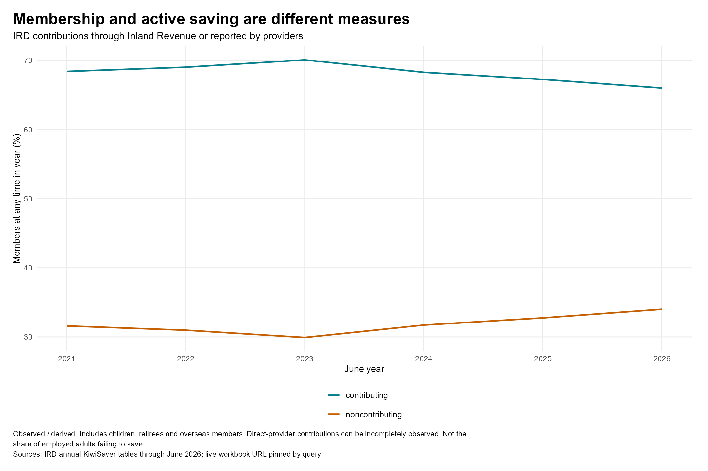
Includes children, retirees and overseas members. Direct-provider contributions can be incompletely observed. Not the share of employed adults failing to save.
PNG · SVG · Plotted data · Source 1
S02_payroll_contribution_rates · Observed / derived
Where compulsory saving would start
IRD employee contribution-rate classification, June 2026
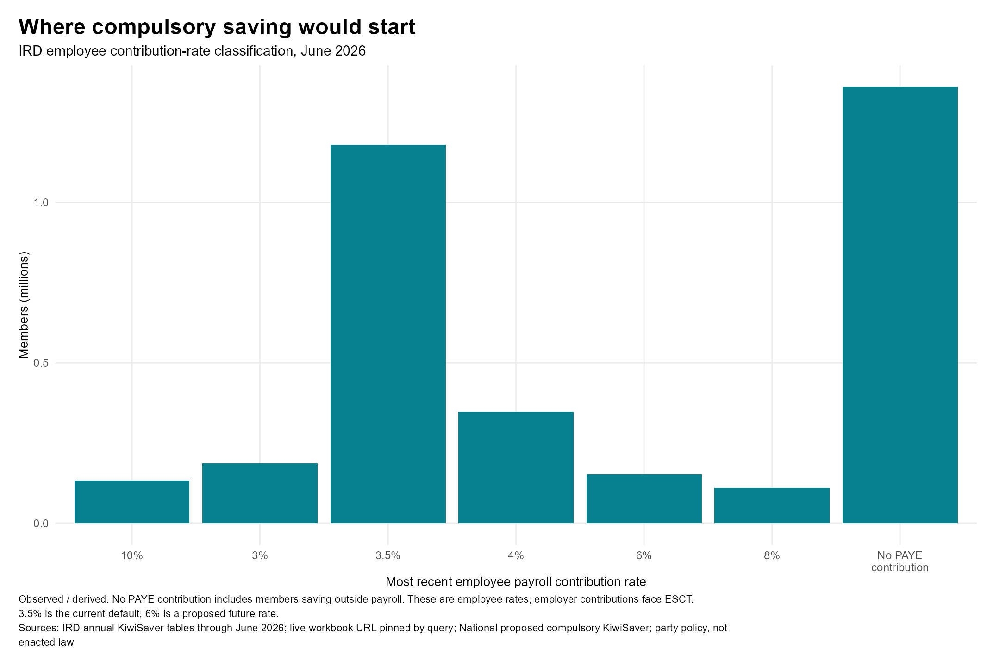
No PAYE contribution includes members saving outside payroll. These are employee rates; employer contributions face ESCT. 3.5% is the current default, 6% is a proposed future rate.
PNG · SVG · Plotted data · Source 1 · Source 2
S03_contribution_sources · Observed / derived
Who supplies the recorded retirement contributions?
Gross flows to providers through Inland Revenue
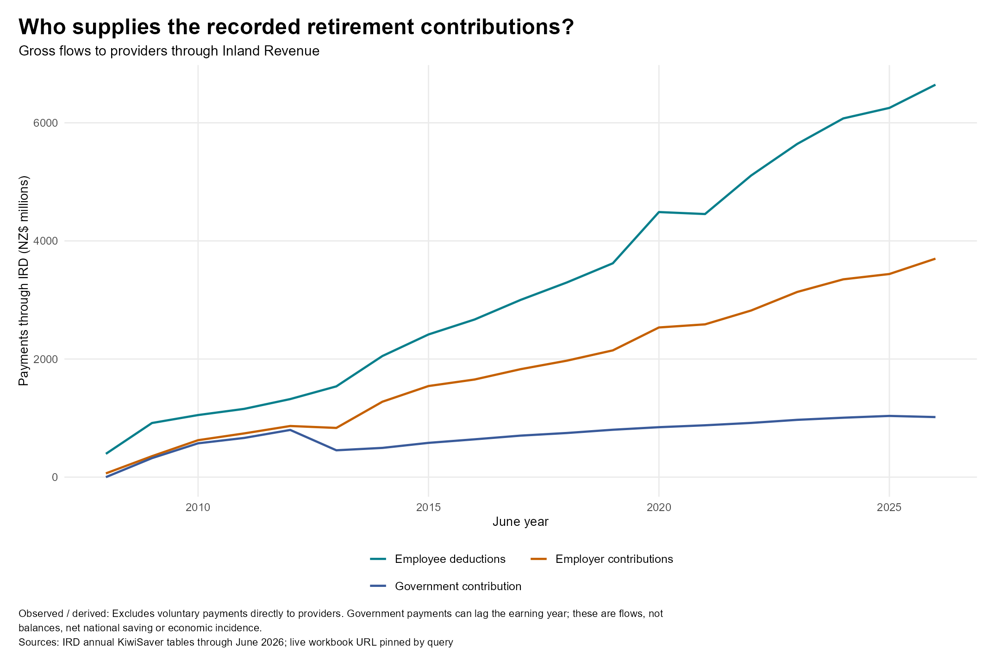
Excludes voluntary payments directly to providers. Government payments can lag the earning year; these are flows, not balances, net national saving or economic incidence.
PNG · SVG · Plotted data · Source 1
S04_early_withdrawals · Observed / derived
Not all KiwiSaver saving stays invested until retirement
First-home and hardship withdrawals reported to IRD
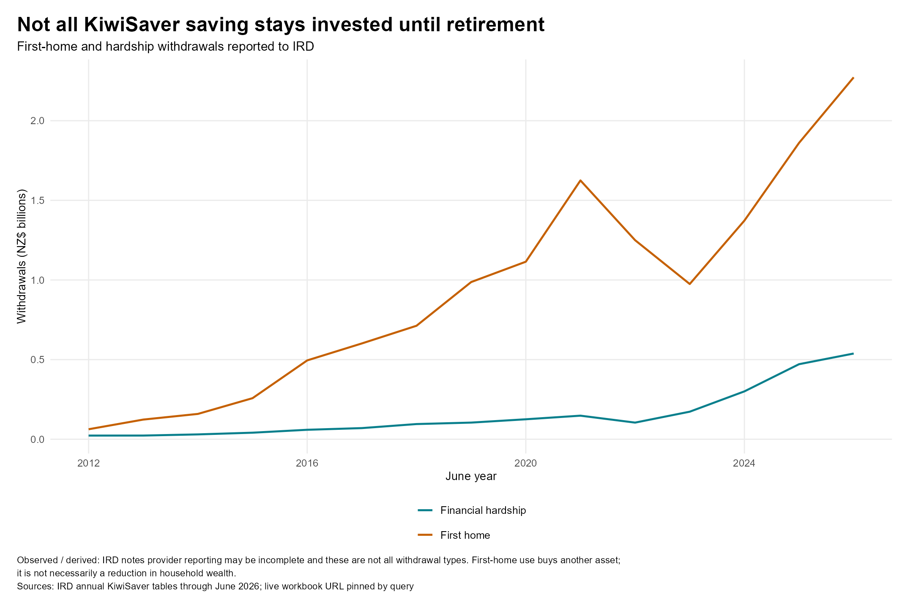
IRD notes provider reporting may be incomplete and these are not all withdrawal types. First-home use buys another asset; it is not necessarily a reduction in household wealth.
PNG · SVG · Plotted data · Source 1
S05_survival_after_65 · Derived from observed mortality
Retirement lasts an uncertain number of years
Stats NZ 2022-2024 period mortality; national median life-table estimates
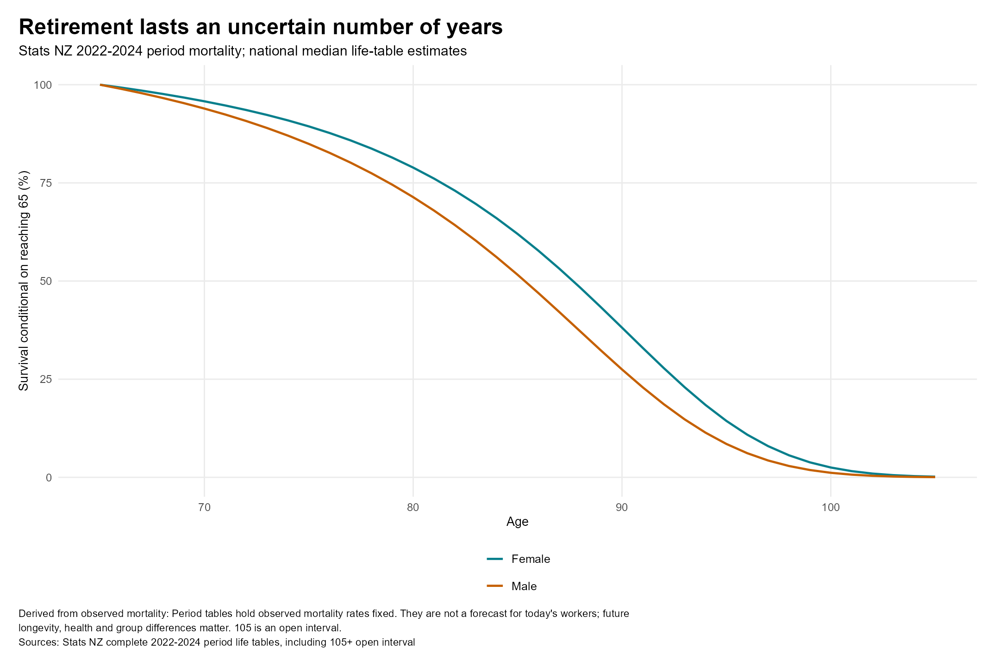
Period tables hold observed mortality rates fixed. They are not a forecast for today's workers; future longevity, health and group differences matter. 105 is an open interval.
PNG · SVG · Plotted data · Source 1
S06_drawdown_longevity_risk · Mortality-based scenario
Planning to an average lifespan leaves longevity risk
Equal weights on male/female survivors at 65; period-life-table arithmetic
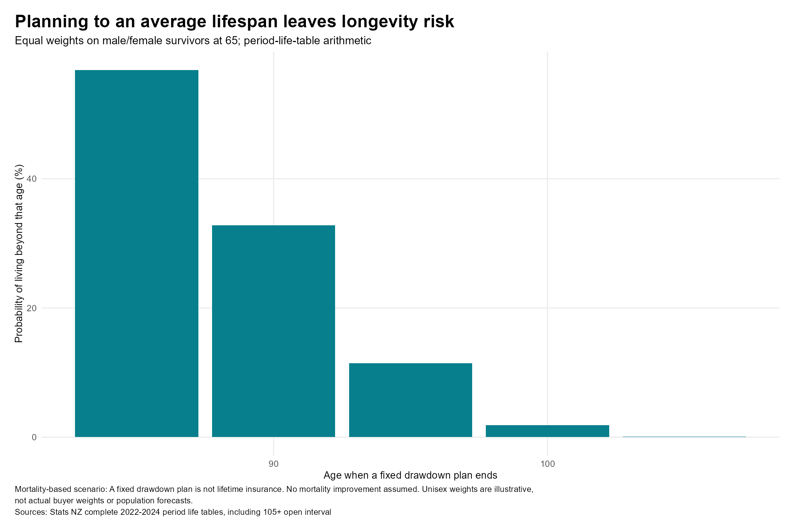
A fixed drawdown plan is not lifetime insurance. No mortality improvement assumed. Unisex weights are illustrative, not actual buyer weights or population forecasts.
PNG · SVG · Plotted data · Source 1
S07_annuity_capital · Actuarial model scenario
What capital funds a lifelong real income?
$30,000 a year, CPI-level single-life annuity; assumed 5% expense loading
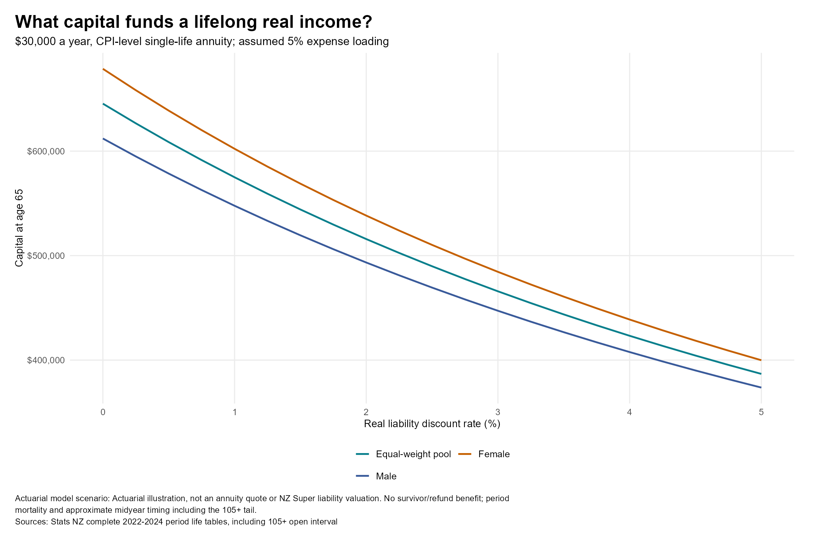
Actuarial illustration, not an annuity quote or NZ Super liability valuation. No survivor/refund benefit; period mortality and approximate midyear timing including the 105+ tail.
PNG · SVG · Plotted data · Source 1
S08_pooling_vs_long_drawdown · Actuarial model scenario
Pooling longevity changes the financing arithmetic
2% real discount; actuarial cost without expense loading in both comparisons
The fixed plan pays everyone for the whole chosen horizon and can leave bequests. The annuity stops at death, has no bequest, and relies on a solvent pool. Not equivalent contracts.
PNG · SVG · Plotted data · Source 1
S09_balances_and_contributions · Scenario
Compulsory deposits build assets, not a specified pension
$70,000 constant real gross earnings; 3% return net of tax and fees
Contribution fractions are net amounts invested, not employee-plus-employer headline rates. End-year deposits, no breaks/withdrawals. Not an estimate of additional national saving.
PNG · SVG · Plotted data · Source 1
S10_balance_to_income · Scenario
Translate retirement balances into income
Forty years of contributions; same annuity pricing assumptions across accumulation returns
Annuity uses 2% real liability discount, period mortality, 5% loading. Risky accumulation returns do not increase the liability discount. CPI-level payout, not wage-indexed NZ Super.
PNG · SVG · Plotted data · Source 1 · Source 2
S11_career_gaps · Scenario
Contribution-based pensions reflect earnings histories
$70,000 full-time earnings; 8% invested; 3% net real return; same annuity basis
No compensating caregiver credits or government top-ups. Scenarios isolate timing and earnings; they do not estimate actual gender or disability gaps.
PNG · SVG · Plotted data · Source 1
S12_fee_sensitivity · Scenario
Annual fees compound into differences in retirement income
8% invested from $70,000 earnings for 40 years; 4% real return after tax, before fees
Assumed fee range, not measured KiwiSaver fees. Fees charged proportionally to assets after gross investment return. Same mortality and annuity expense loading throughout.
PNG · SVG · Plotted data · Source 1
S13_required_contributions · Scenario
Pre-funding a promised income requires an explicit contribution
Target $30,000 CPI-level lifelong income from 65; fixed annuity pricing basis
Conditional on survival to 65; no pre-retirement mortality pooling. Required contribution is a net deposit, not a payroll tax or a costing of universal NZ Super. Return risk remains.
PNG · SVG · Plotted data · Source 1
S14_equal_vs_earnings_pension · Distribution scenario
Individual ownership and a common pension distribute differently
Same total deposits from an artificial equal-sized earnings grid; 8% invested for 40 years
Common benefit redistributes within this synthetic cohort. Grid is not NZ's earnings distribution. No aggregate saving advantage is assumed; mortality and pricing are identical.
PNG · SVG · Plotted data · Source 1
S15_prefunding_transition · Scenario
Pre-funding requires resources during the transition
Extra end-year deposits; 3% net real return; 2% real GDP growth; no withdrawals
Existing pensions still need financing. If deposits are debt-funded, gross assets overstate net pre-funding; no borrowing costs, tax changes or pension offsets are included.
PNG · SVG · Plotted data · Source 1
S16_pay_and_deposits · Scenario
Who funds higher retirement contributions?
Two remuneration assumptions; 30% illustrative ESCT; current income-tax schedule
Employer contributions need not be a free addition to lifetime pay. Includes no ACC, government top-up or wage bargaining response. Scenarios bracket assumptions, not measured incidence.
PNG · SVG · Plotted data · Source 1 · Source 2
S17_nzsf_return_history · Official provisional return indices
Collective pre-funding already has an investment history
NZ Super Fund published cumulative indices through its latest saved month
Provisional, after costs and before NZ tax. Benchmark risk differs; historical excess returns are not guaranteed or a risk-free financing gain. Index excludes government cash contributions.
PNG · SVG · Plotted data · Source 1
S18_pension_indexation · Actuarial model scenario
CPI-level and growing real pensions cost different amounts
$30,000 initial annual pension; same mortality and 5% loading
1% real payment growth is a sensitivity, not the statutory NZ Super indexation formula or a wage forecast. Comparing individual balances with public promises requires matching indexation.
PNG · SVG · Plotted data · Source 1
S19_public_pension_baseline · Actuals / unaudited / forecast
The public pension promise grows with numbers and payment rates
PREFU NZ Super expense and published recipient-count series
2026 fiscal results are unaudited; 2027 onward are forecasts (dashed divider). Policy baseline, not election promises. Recipient statistics and expense flows need consistent timing; ratio is not a statutory payment rate. Individual KiwiSaver balances do not automatically reduce this public obligation.
PNG · SVG · Plotted data · Source 1
S20_accounts_vs_national_saving · Scenario
Bigger retirement accounts need not mean equal new saving
Illustrative $5 billion increase in account deposits, including any public subsidy
Static accounting sensitivity: subtract displaced other saving and additional public dissaving. Not estimated KiwiSaver additionality. Does not model consumption, investment or general-equilibrium responses.
PNG · SVG · Plotted data · Source 1